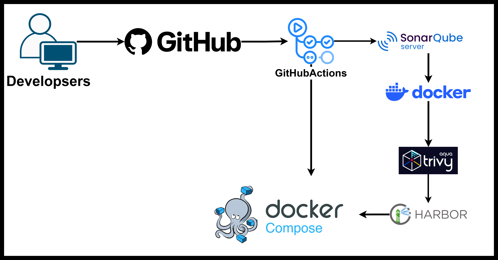
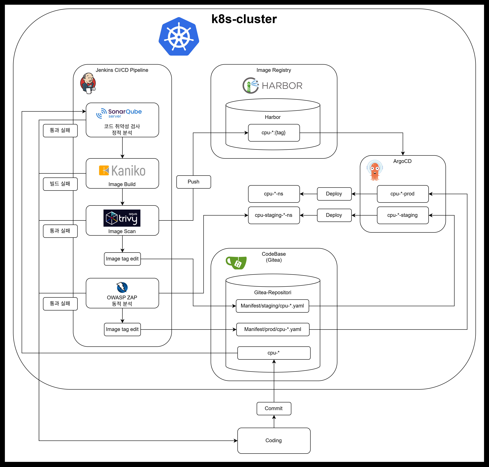
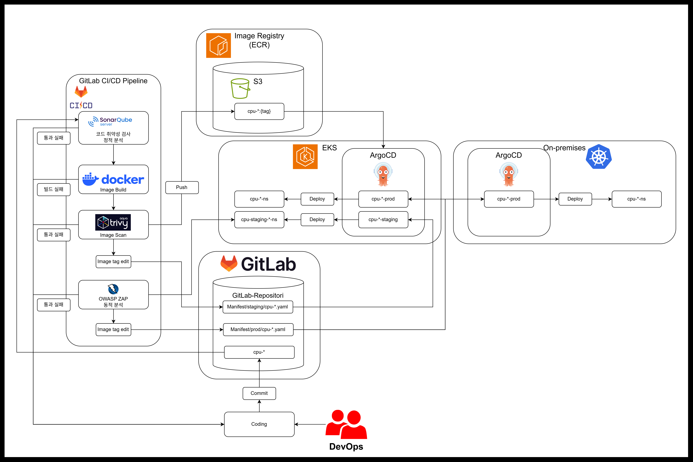
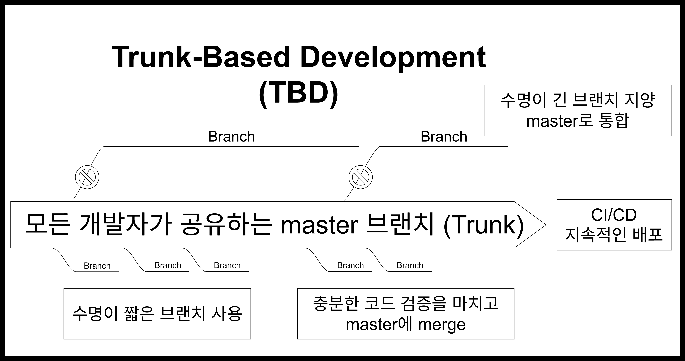

핵심 기술 스택 (Tech Stack)
1. 아키텍처 진화: Monolithic에서 MSA로의 전환
초기 단순한 모놀리식 구조로 빠른 스케치 후, 비즈니스 영역별 독립적인 확장성과 유지보수성을 위해 MSA 구조로 세분화했습니다.
단일 프론트엔드 이미지와 백엔드 이미지 기반의 단순한 구조로 시작했습니다.

회원, 커뮤니티, 팝업 목록/상세, 마이페이지, 지도·코스, AI 챗봇/추천/리뷰 검증 등 기능별 FastAPI 컨테이너 서비스로 분리하고 HAProxy 및 Nginx를 통해 효율적인 트래픽 라우팅을 구성했습니다.

2. 프로덕션급 Kubernetes 환경 전환 및 네트워크 보안
단일 호스트의 한계를 극복하고 자동 복구(Self-Healing), 오토스케일링(HPA), 멀티노드 고가용성을 확보하기 위해 프로덕션급 K8s 클러스터로 전환했습니다.
Istio(mTLS, Gateway), MetalLB, cert-manager, Longhorn, Velero+MinIO, OpenTelemetry, Redis Sentinel 및 MongoDB ReplicaSet을 탑재하여 완벽한 오케스트레이션 환경을 구축했습니다.

네임스페이스별 기본 접근을 차단(Default-Deny)하고 서비스별 트래픽 방향을 명시적으로 화이트리스트화하여 제어했습니다. 추가로 Falco를 적용해 런타임 위협 모니터링 체계를 갖췄습니다.

3. 실시간 데이터 수집 및 고성능 처리 파이프라인
대규모 동시 접속 상황에서도 예약 인원 초과가 발생하지 않도록 Redis의 원자적 연산(DECR)으로 순번을 대기열 처리하고, Kafka 메시지 큐를 통해 순차 처리하여 데이터 정합성을 완벽히 보장했습니다.

서울 열린데이터광장의 실시간 인구밀집도 API 데이터를 Kafka Producer로 수집하여 토픽별로 MongoDB에 적재했습니다. 팝업스토어 정보는 PlayMCP + Claude Code로 수집 및 diff 비교를 거쳐 신규 데이터만 MongoDB에 Upsert되도록 설계했습니다.

4. AWS On-Premise 하이브리드 클라우드 아키텍처
평소 트래픽은 온프레미스 K8s 클러스터에서 처리하여 비용을 극대화하고, 트래픽 급증 시 초과분을 AWS EKS가 분산 흡수하는 하이브리드 아키텍처를 구축했습니다.

- • 비용 최적화: 데이터베이스는 온프레미스 환경에 유지하여 클라우드 비용을 최소화
- • 관측성 분리: 온프레미스 전체 장애 시에도 가시성을 확보하기 위해 모니터링 인프라(MELT)는 AWS로 분리 배치하여 트레이드오프 극복
5. CI/CD 배포 파이프라인 및 브랜치 전략 파이프라인 구조
프로젝트 개발, K8s, AWS 스테이지별 구축된 CI/CD 파이프라인과 Trunk-Based 브랜치 전략 구조입니다.
SonarQube 정적 코드 검사 → Trivy 보안 스캔 → Harbor 이미지 푸시 → Docker Compose 자동 반영 파이프라인

Gitea 코드베이스 커밋 시 Jenkins 파이프라인 작동 (SonarQube → Kaniko 빌드 → Trivy → OWASP ZAP 동적 분석) 후 ArgoCD를 통해 K8s 클러스터로 GitOps 배포

GitLab CI를 통해 ECR 이미지 저장 및 S3 매니페스트 관리 후 ArgoCD로 EKS 및 On-Premises 클러스터 동시 동기화

수명이 긴 브랜치를 지양하고 수명이 짧은 기능 브랜치에서 빠른 코드 검증 후 Master(Trunk) 브랜치로 통합하여 지속적인 배포(CD) 속도를 극대화했습니다.
